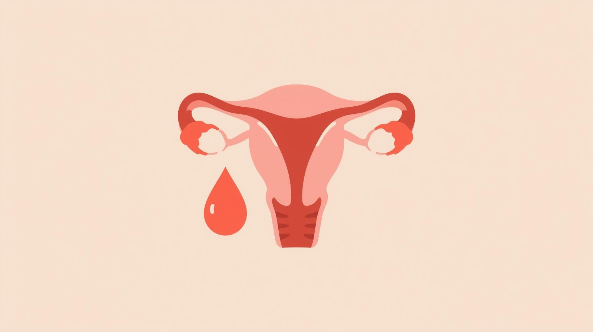

Ciclo
Menstrual
O ciclo menstrual é muito mais do que apenas o período de menstruação: ele é um verdadeiro termômetro do corpo feminino, dividido em quatro fases. Na menstrual, acontece o sangramento; na folicular, os ovários começam a se preparar para a ovulação; na ovulatória, o corpo atinge o pico de fertilidade; e na lútea, tudo se ajeita para o próximo ciclo. Mesmo sendo um processo natural, falar sobre ele ainda gera tabus e desconfortos. Conhecer cada fase ajuda a entender o que está acontecendo no corpo, aceitar as mudanças e encarar a menstruação com naturalidade, sem culpa ou vergonha.
O ciclo também afeta a saúde mental: mudanças de humor, irritabilidade e cansaço podem aparecer, especialmente na fase pré-menstrual. Pequenos cuidados, como uma alimentação equilibrada, exercícios leves, momentos de descanso e até registrar o ciclo, podem fazer grande diferença. Mas é importante ficar atenta: se os ciclos forem muito irregulares, os sangramentos intensos ou dolorosos, ou os sintomas emocionais ficarem muito fortes, vale procurar um médico. Cuidar do corpo e da mente é essencial para viver o ciclo de forma saudável e consciente.